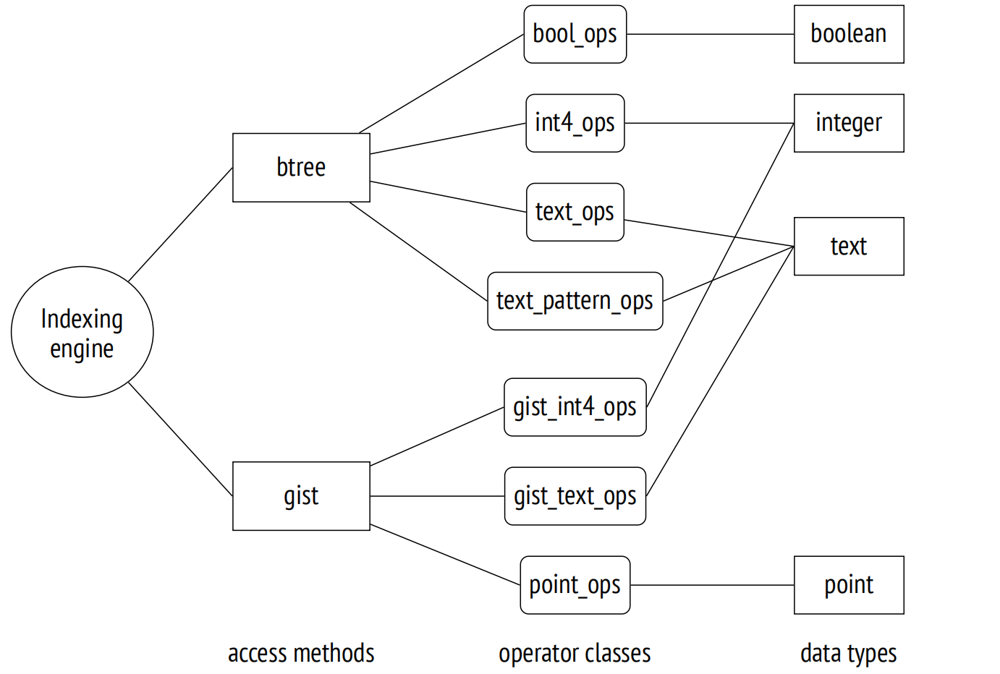

第 19 章：索引访问方法
19.1 索引和可扩展性
索引是一种数据库对象，主要用于加速数据访问。它们是辅助数据结构：任何索引都可以基于堆数据删除并重建。除了加速数据访问之外，索引还用于强制执行某些完整性约束。
PostgreSQL 内核提供了六种内置的索引访问方法 (索引类型)：
=> SELECT amname FROM pg_am WHERE amtype = 'i';
amname
−−−−−−−−
btree
hash
gist
gin
spgist
brin
(6 rows)PostgresSQL 的可扩展性意味着可以在不修改内核的情况下添加新的访问方法。其中一个此类扩展 (bloom 方法) 被包含在标准模块集中。
尽管各种索引类型之间存在诸多差异，但最终都是将键 (例如索引列的值) 与包含该键的堆元组进行匹配。元组由 6 字节的元组 ID (TID) 引用。知道键或者关于键的一些信息，就可以快速读取可能包含所需数据的元组，而无需扫描整个表。
为了确保新的访问方法可以作为扩展被添加，PostgreSQL 实现了一个通用的索引引擎。其主要目标是检索和处理特定访问方法返回的 TID：
- 从相应的堆元组中读取数据
- 检查特定快照中元组的可见性
- 如果访问方法的评估并不明确，则重新检查条件
索引引擎还参与在优化阶段所构建的计划的执行。在评估各种执行路径时，优化器需要知道所有可能适用的访问方法的属性：此方法能否按照要求的顺序返回数据，还是需要一个单独的排序阶段？是否可以立即返回前几个值，还是说必须等待整个结果集被获取？诸如此类。
不仅仅是优化器需要了解访问方法的特定信息。索引的创建也提出了更多需要解答的问题：访问方法是否支持多列索引？这个索引能否保证唯一性？
索引引擎允许使用多种访问方法；为了得以支持，访问方法必须实现一个特定的接口来声明其特性和属性。
访问方法用于解决以下问题：
- 实现建立索引的算法，以及插入和删除索引条目
- 在页面之间分配索引条目 (由缓冲区缓存管理器进一步处理)
- 实现清理的算法
- 获取锁以确保正确的并发操作
- 生成 WAL 条目
- 根据键查找索引数据
- 评估索引扫描的成本
PostgreSQL 的可扩展性还体现在能够添加新数据类型的能力上，而访问方法事先对此一无所知。因此，访问方法必须定义它们自己的接口，以便插入任意数据类型。
为了特定的访问方法能够使用新的数据类型，需要实现相应的接口，即提供可与索引一起使用的操作符，可能还包括一些辅助支持函数。这样的一组操作符和函数被称为操作符类。
索引逻辑由访问方法自身实现了部分，但有些则交由操作符类。这种分配相当随意：虽然 B 树将所有逻辑内置于访问方法中，但其他一些方法可能只提供主框架，将所有实现细节留给特定的操作符类来决定。同一数据类型通常由若干个操作符类支持，用户可以选择行为最合适的一个。
以下是整体概况的一小部分：
19.2 操作符类和操作符族
19.2.1 操作符类
访问方法接口 1 由操作符类实现，2 操作符类是访问方法应用于特定数据类型的一组操作符和支持函数。
操作符类存储在系统目录的 pg_opclass 表中。以下查询返回上述所说的完整数据：
=> SELECT amname, opcname, opcintype::regtype
FROM pg_am am
JOIN pg_opclass opc ON opcmethod = am.oid;
amname | opcname | opcintype
−−−−−−−−+−−−−−−−−−−−−−−−−−−−−−−−−−−−−−−+−−−−−−−−−−−−−−−−−−−−−−−−−−−−−
btree | array_ops | anyarray
hash | array_ops | anyarray
btree | bit_ops | bit
btree | bool_ops | boolean
...
brin | pg_lsn_minmax_multi_ops | pg_lsn
brin | pg_lsn_bloom_ops | pg_lsn
brin | box_inclusion_ops | box
(177 rows)在大多数情况下，我们不必了解任何有关操作符类的信息。我们只需简单地创建一个默认使用某个操作符类的索引。
例如，此处是支持文本类型的 B 树操作符类。其中一个类总是被标记为默认类：
=> SELECT opcname, opcdefault
FROM pg_am am
JOIN pg_opclass opc ON opcmethod = am.oid
WHERE amname = 'btree'
AND opcintype = 'text'::regtype;
opcname | opcdefault
−−−−−−−−−−−−−−−−−−−−−+−−−−−−−−−−−−
text_ops | t
varchar_ops | f
text_pattern_ops | f
varchar_pattern_ops | f
(4 rows)一个典型的索引创建命令如下所示：
CREATE INDEX ON aircrafts(model, range);但这只是一种简写，它可以展开为以下语法：
CREATE INDEX ON aircrafts
USING btree -- the default access method
(
model text_ops, -- the default operator class for text
range int4_ops -- the default operator class for integer
);如果你想使用不同类型的索引或实现某些自定义行为，那么你必须明确指定所需的访问方法或操作符类。
为特定访问方法和数据类型定义的每个操作符类必须包含一组处理此类型参数的操作符，并实现该访问方法的语义。
例如，btree 访问方法定义了五个强制性的比较操作符。任何 btree 操作符类都必须包含这五个操作符：
=> SELECT opcname, amopstrategy, amopopr::regoperator
FROM pg_am am
JOIN pg_opfamily opf ON opfmethod = am.oid
JOIN pg_opclass opc ON opcfamily = opf.oid
JOIN pg_amop amop ON amopfamily = opcfamily
WHERE amname = 'btree'
AND opcname IN ('text_ops', 'text_pattern_ops')
AND amoplefttype = 'text'::regtype
AND amoprighttype = 'text'::regtype
ORDER BY opcname, amopstrategy;
opcname | amopstrategy | amopopr
−−−−−−−−−−−−−−−−−−+−−−−−−−−−−−−−−+−−−−−−−−−−−−−−−−−
text_ops | 1 | <(text,text)
text_ops | 2 | <=(text,text)
text_ops | 3 | =(text,text)
text_ops | 4 | >=(text,text)
text_ops | 5 | >(text,text)
text_pattern_ops | 1 | ~<~(text,text)
text_pattern_ops | 2 | ~<=~(text,text)
text_pattern_ops | 3 | =(text,text)
text_pattern_ops | 4 | ~>=~(text,text)
text_pattern_ops | 5 | ~>~(text,text)
(10 rows)访问方法所暗示的操作符的语义由显示为 amopstrategy 的策略编号反映。3 例如，对于 btree 来说，策略 1 表示小于，策略 2 表示小于或等于，依此类推。操作符本身可以有任意名称。
上面的示例显示了两种类型的操作符。普通操作符和带有波浪线的操作符之间的区别在于，后者不考虑排序规则 4 并执行字符串的逐位比较。尽管如此，两种风格的操作符都实现了相同的逻辑比较操作。
text_pattern_ops 操作符类旨在解决对 ‘~~’ 操作符 (对应于 LIKE 操作符) 的支持限制。在使用非 C 排序规则的数据库中，这个操作符不能使用文本字段上的常规索引。
=> SHOW lc_collate;
lc_collate
−−−−−−−−−−−−−
en_US.UTF−8
(1 row)
=> CREATE INDEX ON tickets(passenger_name);
=> EXPLAIN (costs off)
SELECT * FROM tickets WHERE passenger_name LIKE 'ELENA%';
QUERY PLAN
−−−−−−−−−−−−−−−−−−−−−−−−−−−−−−−−−−−−−−−−−−−−−−
Seq Scan on tickets
Filter: (passenger_name ~~ 'ELENA%'::text)
(2 rows)使用 text_pattern_ops 操作符类的索引行为有所不同：
=> CREATE INDEX tickets_passenger_name_pattern_idx
ON tickets(passenger_name text_pattern_ops);
=> EXPLAIN (costs off)
SELECT * FROM tickets WHERE passenger_name LIKE 'ELENA%';
QUERY PLAN
−−−−−−−−−−−−−−−−−−−−−−−−−−−−−−−−−−−−−−−−−−−−−−−−−−−−−−−−−−−−−−
Bitmap Heap Scan on tickets
Filter: (passenger_name ~~ 'ELENA%'::text)
−> Bitmap Index Scan on tickets_passenger_name_pattern_idx
Index Cond: ((passenger_name ~>=~ 'ELENA'::text) AND
(passenger_name ~<~ 'ELENB'::text))
(5 rows)注意 Index Cond 中过滤表达式的变化。搜索现在仅使用 % 之前的模板前缀，而 false-positive 会在基于 Filter 条件的重新检查期间被过滤掉。btree 访问方法的操作符类没有提供用于比较模板的操作符，而使用 B 树的唯一方法是使用比较操作符重写此条件。text_pattern_ops 类的操作符不考虑排序规则，这让我们有机会使用等价条件代替。5
如果满足以下两个前置条件，则可以使用索引来加速过滤条件的访问：
-
条件写成 “indexed-column operator expression” (如果操作符有指定的可交换操作符 6，条件也可以写成 “expression operator indexed-column” 的形式)。7
-
操作符属于索引声明中为索引列指定的操作符类。
例如，以下查询便可以使用索引：
=> EXPLAIN (costs off)
SELECT * FROM tickets WHERE 'ELENA BELOVA' = passenger_name;
QUERY PLAN
−−−−−−−−−−−−−−−−−−−−−−−−−−−−−−−−−−−−−−−−−−−−−−−−−−−−−−−−
Index Scan using tickets_passenger_name_idx on tickets
Index Cond: (passenger_name = 'ELENA BELOVA'::text)
(2 rows)请注意 Index Cond 条件中参数的位置：在执行阶段，索引字段必须在左侧。当参数被置换时，操作符被一个可交换的操作符替换；在此例中，它是相同的操作符，因为等值关系是可交换的。
在接下来的查询中，由于条件中的列名被函数调用替换，因此技术上不可能使用常规索引：
=> EXPLAIN (costs off)
SELECT * FROM tickets WHERE initcap(passenger_name) = 'Elena Belova';
QUERY PLAN
−−−−−−−−−−−−−−−−−−−−−−−−−−−−−−−−−−−−−−−−−−−−−−−−−−−−−−−−−−−−
Seq Scan on tickets
Filter: (initcap(passenger_name) = 'Elena Belova'::text)
(2 rows) 此处你可以使用表达式索引 8，它在声明中指定了一个任意表达式，而不是列：
=> CREATE INDEX ON tickets( (initcap(passenger_name)) );
=> EXPLAIN (costs off)
SELECT * FROM tickets WHERE initcap(passenger_name) = 'Elena Belova';
QUERY PLAN
−−−−−−−−−−−−−−−−−−−−−−−−−−−−−−−−−−−−−−−−−−−−−−−−−−−−−−−−−−−−−−−−−−−−
Bitmap Heap Scan on tickets
Recheck Cond: (initcap(passenger_name) = 'Elena Belova'::text)
−> Bitmap Index Scan on tickets_initcap_idx
Index Cond: (initcap(passenger_name) = 'Elena Belova'::text)
(4 rows)索引表达式只能依赖于堆元组值，不能受到数据库中存储的其他数据或配置参数 (如区域设置) 的影响。换句话说，如果表达式包含任何函数调用，这些函数必须是 IMMUTABLE 9，并且它们必须遵循这个稳定性分类。否则，针对同一查询，索引扫描和堆扫描可能会返回不同的结果。
除了常规操作符之外，操作符类可以提供访问方法所需的支持函数 10。例如，btree 访问方法定义了五个支持函数 11；第一个 (比较两个值) 函数是必需的，而所有其他函数都可以不存在：
=> SELECT amprocnum, amproc::regproc
FROM pg_am am
JOIN pg_opfamily opf ON opfmethod = am.oid
JOIN pg_opclass opc ON opcfamily = opf.oid
JOIN pg_amproc amproc ON amprocfamily = opcfamily
WHERE amname = 'btree'
AND opcname = 'text_ops'
AND amproclefttype = 'text'::regtype
AND amprocrighttype = 'text'::regtype
ORDER BY amprocnum;
amprocnum | amproc
−−−−−−−−−−−+−−−−−−−−−−−−−−−−−−−−
1 | bttextcmp
2 | bttextsortsupport
4 | btvarstrequalimage
(3 rows)19.2.2 操作符族
每个操作符类始终属于某个操作符族 12 (在 pg_opfamily 表中列出)。一个操作符族可以包含多个以相同方式处理相似数据类型的操作符类。
例如，integer_ops 族包括几个用于整数数据类型的类，这些类的语义相同，但大小有所不同：
=> SELECT opcname, opcintype::regtype
FROM pg_am am
JOIN pg_opfamily opf ON opfmethod = am.oid
JOIN pg_opclass opc ON opcfamily = opf.oid
WHERE amname = 'btree'
AND opfname = 'integer_ops';
opcname | opcintype
−−−−−−−−−−+−−−−−−−−−−−
int2_ops | smallint
int4_ops | integer
int8_ops | bigint
(3 rows)datetime_ops 族包含用于处理日期的操作符类：
=> SELECT opcname, opcintype::regtype
FROM pg_am am
JOIN pg_opfamily opf ON opfmethod = am.oid
JOIN pg_opclass opc ON opcfamily = opf.oid
WHERE amname = 'btree'
AND opfname = 'datetime_ops';
opcname | opcintype
−−−−−−−−−−−−−−−−−+−−−−−−−−−−−−−−−−−−−−−−−−−−−−−
date_ops | date
timestamptz_ops | timestamp with time zone
timestamp_ops | timestamp without time zone
(3 rows) 虽然每个操作符类支持单一数据类型，但一个族可以包含用于不同数据类型的操作符类：
=> SELECT opcname, amopopr::regoperator
FROM pg_am am
JOIN pg_opfamily opf ON opfmethod = am.oid
JOIN pg_opclass opc ON opcfamily = opf.oid
JOIN pg_amop amop ON amopfamily = opcfamily
WHERE amname = 'btree'
AND opfname = 'integer_ops'
AND amoplefttype = 'integer'::regtype
AND amopstrategy = 1
ORDER BY opcname;
opcname | amopopr
−−−−−−−−−−+−−−−−−−−−−−−−−−−−−−−−
int2_ops | <(integer,bigint)
int2_ops | <(integer,smallint)
int2_ops | <(integer,integer)
int4_ops | <(integer,bigint)
int4_ops | <(integer,smallint)
int4_ops | <(integer,integer)
int8_ops | <(integer,bigint)
int8_ops | <(integer,smallint)
int8_ops | <(integer,integer)
(9 rows)由于将各种操作符分组至一个单独的操作符族中，规划器在使用索引处理涉及不同类型的值的条件时，可以不需要进行类型转换。
19.3 索引引擎接口
如同表访问方法一样 ，pg_am 表的 amhandler 列包含实现了接口的函数名称：13
=> SELECT amname, amhandler FROM pg_am WHERE amtype = 'i';
amname | amhandler
−−−−−−−−+−−−−−−−−−−−−−
btree | bthandler
hash | hashhandler
gist | gisthandler
gin | ginhandler
spgist | spghandler
brin | brinhandler
(6 rows)此函数用真实值填充接口结构 14 中的占位符。其中一些是负责与索引访问相关的独立任务的函数 (例如，它们可以执行索引扫描并返回堆元组 ID)，而其他一些是索引引擎必须知晓的索引方法的属性。
所有属性分为三类：15
- 访问方法属性
- 特定索引的属性
- 索引的列级属性
访问方法和索引级属性之间的区别是为了将来考虑：目前，基于特定访问方法的所有索引在这两个层次上始终具有相同的属性。
19.3.1 访问方法属性
以下五个属性在访问方法层面定义 (此处以 B 树方法为例)：
=> SELECT a.amname, p.name, pg_indexam_has_property(a.oid, p.name)
FROM pg_am a, unnest(array[
'can_order', 'can_unique', 'can_multi_col',
'can_exclude', 'can_include'
]) p(name)
WHERE a.amname = 'btree';
amname | name | pg_indexam_has_property
−−−−−−−−+−−−−−−−−−−−−−−−+−−−−−−−−−−−−−−−−−−−−−−−−−
btree | can_order | t
btree | can_unique | t
btree | can_multi_col | t
btree | can_exclude | t
btree | can_include | t
(5 rows)CAN ORDER：接收排序数据的能力 16。这个属性目前只有 B 树支持。
要按要求的顺序获取结果，始终可以先扫描表，然后对获取的数据进行排序：
=> EXPLAIN (costs off)
SELECT * FROM seats ORDER BY seat_no;
QUERY PLAN
−−−−−−−−−−−−−−−−−−−−−−−−
Sort
Sort Key: seat_no
−> Seq Scan on seats
(3 rows)但是如果有支持该属性的索引，那么数据可以立即按照所需顺序返回：
=> EXPLAIN (costs off)
SELECT * FROM seats ORDER BY aircraft_code;
QUERY PLAN
−−−−−−−−−−−−−−−−−−−−−−−−−−−−−−−−−−−−−−
Index Scan using seats_pkey on seats
(1 row)CAN UNIQUE：支持唯一约束和主键约束 17。此属性仅适用于 B 树。
每次声明唯一约束或主键约束时，PostgreSQL 会自动创建一个唯一索引用于支持这个约束。
=> INSERT INTO bookings(book_ref, book_date, total_amount)
VALUES ('000004', now(), 100.00);
ERROR: duplicate key value violates unique constraint
"bookings_pkey"
DETAIL: Key (book_ref)=(000004) already exists.也就是说，如果你只是简单地创建了一个唯一索引而没有明确声明一个完整性约束，效果似乎是完全一样的：索引列将不允许重复。那么区别是什么呢？
完整性约束定义了一个绝不能违反的属性，而索引只是保证这一属性的一种机制。理论上，约束也可以通过其他手段施加。
例如，PostgreSQL 不支持分区表全局索引，但你仍然可以在这样的表上创建唯一约束 (如果它包含分区键)。在这种情况下，全局唯一性由每个分区的本地唯一索引来确保，因为不同分区不能有相同的分区键。
CAN MULTI COL：创建多列索引的能力。18
多列索引可以加速对不同列施加的多个条件的搜索。例如，ticket_flights 表有一个复合主键，所以相应的索引是建立在多个列上的：
=> \d ticket_flights_pkey
Index "bookings.ticket_flights_pkey"
Column | Type | Key? | Definition
−−−−−−−−−−−+−−−−−−−−−−−−−−−+−−−−−−+−−−−−−−−−−−−
ticket_no | character(13) | yes | ticket_no
flight_id | integer | yes | flight_id
primary key, btree, for table "bookings.ticket_flights"根据票号和航班 ID 搜索航班使用的是索引扫描：
=> EXPLAIN (costs off)
SELECT * FROM ticket_flights
WHERE ticket_no = '0005432001355'
AND flight_id = 51618;
QUERY PLAN
−−−−−−−−−−−−−−−−−−−−−−−−−−−−−−−−−−−−−−−−−−−−−−−−−−−−−−−−−−
Index Scan using ticket_flights_pkey on ticket_flights
Index Cond: ((ticket_no = '0005432001355'::bpchar) AND
(flight_id = 51618))
(3 rows)通常情况下，即使过滤条件只涉及其某些列，多列索引也可以加速搜索。对于 B 树，如果过滤条件涵盖了索引声明中最先出现的相关列，搜索将会很高效：
=> EXPLAIN (costs off)
SELECT *
FROM ticket_flights
WHERE ticket_no = '0005432001355';
QUERY PLAN
−−−−−−−−−−−−−−−−−−−−−−−−−−−−−−−−−−−−−−−−−−−−−−−−−−−−−−−−
Index Scan using ticket_flights_pkey on ticket_flights
Index Cond: (ticket_no = '0005432001355'::bpchar)
(2 rows)在所有其他情况下 (例如，如果条件仅包含 flights_id)，搜索实际上将仅限于初始列 (如果查询包含相应的条件)，而其他条件仅用于过滤返回的结果。其他类型的索引可能会有不同的行为。
CAN EXCLUDE：支持排它约束。19
排它约束保证表中任何两行都不会满足由操作符定义的条件。为了施加这个约束，PostgreSQL 会自动创建一个索引；必须有一个操作符类，其中包含约束条件中使用的操作符。
通常用于此目的的是交集操作符 &&。例如，你可以使用它来明确声明会议室不能在同一时间被预订两次，或者地图上的建筑物不能重叠。
有了相等运算符，排它约束就具有了唯一性的含义：禁止表中有两行具有相同的键值。尽管如此，它与唯一约束不同：特别是，排它约束的键无法被外键引用，也不能在 ON CONFLICT 子句中使用。
CAN INCLUDE：向索引中添加非键列的能力，使得这个索引成为覆盖索引。
使用这个属性，你可以用额外的列扩展唯一索引。这样的索引仍然可以保证所有键列的值都是唯一的，同时从包含的列中检索数据可以不需要访问堆：
=> CREATE UNIQUE INDEX ON flights(flight_id) INCLUDE (status);
=> EXPLAIN (costs off)
SELECT status FROM flights
WHERE flight_id = 51618;
QUERY PLAN
−−−−−−−−−−−−−−−−−−−−−−−−−−−−−−−−−−−−−−−−−−−−−−−−−−−−−−−−−−−−−−−
Index Only Scan using flights_flight_id_status_idx on flights
Index Cond: (flight_id = 51618)
(2 rows)19.3.2 索引级属性
以下是与索引相关的属性 (显示现有索引)：
=> SELECT p.name, pg_index_has_property('seats_pkey', p.name)
FROM unnest(array[
'clusterable', 'index_scan', 'bitmap_scan', 'backward_scan'
]) p(name);
name | pg_index_has_property
−−−−−−−−−−−−−−−+−−−−−−−−−−−−−−−−−−−−−−−
clusterable | t
index_scan | t
bitmap_scan | t
backward_scan | t
(4 rows)CLUSTERABLE：根据索引扫描返回的 ID 顺序物理移动堆元组的能力。此属性显示是否支持 CLUSTER 命令。
INDEX SCAN：支持索引扫描。这个属性意味着访问方法可以逐个返回 TIDs。尽管看起来奇怪，但有些索引不提供这个功能。
BITMAP SCAN：支持位图扫描。这个属性定义了访问方法是否可以一次性创建并返回所有 TIDs 的位图。
BACKWARD SCAN：与索引创建时指定的顺序相比，能够以相反的顺序返回结果。只有当访问方法支持索引扫描时，这个属性才有意义。
19.3.3 列级属性
最后，让我们看一下列属性：
=> SELECT p.name,
pg_index_column_has_property('seats_pkey', 1, p.name)
FROM unnest(array[
'asc', 'desc', 'nulls_first', 'nulls_last', 'orderable',
'distance_orderable', 'returnable', 'search_array', 'search_nulls'
]) p(name);
name | pg_index_column_has_property
−−−−−−−−−−−−−−−−−−−−+−−−−−−−−−−−−−−−−−−−−−−−−−−−−−−
asc | t
desc | f
nulls_first | f
nulls_last | t
orderable | t
distance_orderable | f
returnable | t
search_array | t
search_nulls | t
(9 rows)ASC，DESC，NULLS FIRST，NULLS LAST：用于排序列值。
这些属性定义了列值应按升序还是降序存储，以及空值是应该出现在常规值之前还是之后。所有这些属性仅适用于 B 树。
ORDERABLE：使用 ORDER BY 子句对列值进行排序的能力。此属性仅适用于 B 树。
DISTANCE ORDERABLE：支持排序操作符。20
与返回逻辑值的常规索引操作符不同，排序操作符返回了一个实数，表示从一个参数到另一个参数的"距离"。索引支持查询的 ORDER BY 子句中指定的此类操作符。
例如，排序操作符 <-> 可以找到距指定点最近的机场：
=> CREATE INDEX ON airports_data USING gist(coordinates);
=> EXPLAIN (costs off)
SELECT * FROM airports
ORDER BY coordinates <-> point (43.578,57.593)
LIMIT 3;
QUERY PLAN
−−−−−−−−−−−−−−−−−−−−−−−−−−−−−−−−−−−−−−−−−−−−−−−−−−−−−−−−−−−−−−−−−
Limit
−> Index Scan using airports_data_coordinates_idx on airpo...
Order By: (coordinates <−> '(43.578,57.593)'::point)
(3 rows)RETURNABLE：无需访问表即可返回数据的能力 (支持仅索引扫描)。
这个属性定义了索引结构是否允许检索索引值。这并不总是可能的：例如，某些索引可能存储哈希码而不是实际的值。在这种情况下，CAN INCLUDE 属性也将不可用。
SEARCH ARRAY：支持在数组中搜索多个元素。
数组的显式使用并不是唯一可能需要的情况。例如，规划器将 IN (list) 表达式转换为数组扫描：
=> EXPLAIN (costs off)
SELECT * FROM bookings
WHERE book_ref IN ('C7C821', 'A5D060', 'DDE1BB');
QUERY PLAN
−−−−−−−−−−−−−−−−−−−−−−−−−−−−−−−−−−−−−−−−−−−−
Index Scan using bookings_pkey on bookings
Index Cond: (book_ref = ANY
('{C7C821,A5D060,DDE1BB}'::bpchar[]))
(3 rows)如果索引方法不支持此类操作符，执行器可能不得不进行多次迭代来查找特定值 (这可能会降低索引扫描的效率)。
SEARCH NULLS ：搜索 IS NULL 和 IS NOT NULL 条件。
我们应该索引空值吗？一方面，这允许我们对 IS [NOT] NULL 等条件进行索引扫描，以及在没有提供过滤条件的情况下将索引用作覆盖索引 (在这种情况下，索引必须返回所有堆元组数据，包括那些包含空值的堆元组)。但另一方面，跳过空值可以减小索引的大小。
这个决定留给访问方法开发者自行决定，但通常空值确实会被索引。
如果不需要在索引中包含空值，你可以通过创建只覆盖所需行的部分索引 21 来排除它们。例如：
=> CREATE INDEX ON flights(actual_arrival)
WHERE actual_arrival IS NOT NULL;
=> EXPLAIN (costs off)
SELECT * FROM flights
WHERE actual_arrival = '2017-06-13 10:33:00+03';
QUERY PLAN
−−−−−−−−−−−−−−−−−−−−−−−−−−−−−−−−−−−−−−−−−−−−−−−−−−−−−−−−−−−−−−−−−
Index Scan using flights_actual_arrival_idx on flights
Index Cond: (actual_arrival = '2017−06−13 10:33:00+03'::ti...
(2 rows)部分索引比完整索引小，并且仅当被索引的行发生变化时才会更新，这有时可以带来明显的性能提升。显然，除了空值检查之外，WHERE 子句可以提供任何条件 (可以与 IMMUTABLE 函数一起使用)。
建立部分索引的能力由索引引擎提供，因此不依赖于访问方法。
接口只包括索引方法的那些必须提前知道以做出正确决策的属性。例如，它没有列出任何支持谓词锁或非阻塞索引创建 (CONCURRENTLY) 等特性的属性。这些属性在实现接口的函数代码中定义。
-
postgresql.org/docs/14/xindex.html ↩︎
-
postgresql.org/docs/14/indexes-opclass.html ↩︎
-
postgresql.org/docs/14/xindex#XINDEX-STRATEGIES.html ↩︎
-
postgresql.org/docs/14/collation.html
postgresql.org/docs/14/indexes-collations.html ↩︎ -
backend/utils/adt/like_support.c ↩︎
-
postgresql.org/docs/14/xoper-optimization#id-1.8.3.18.6.html ↩︎
-
backend/optimizer/path/indxpath.c, match_clause_to_indexcol function ↩︎
-
postgresql.org/docs/14/indexes-expressional.html ↩︎
-
postgresql.org/docs/14/xfunc-volatility.html ↩︎
-
postgresql.org/docs/14/xindex#XINDEX-SUPPORT.html ↩︎
-
postgresql.org/docs/14/btree-support-funcs.html ↩︎
-
postgresql.org/docs/14/xindex#XINDEX-OPFAMILY.html ↩︎
-
postgresql.org/docs/14/indexam.html ↩︎
-
include/access/amapi.h ↩︎
-
backend/utils/adt/amutils.c, indexam_property function ↩︎
-
postgresql.org/docs/14/indexes-ordering.html ↩︎
-
postgresql.org/docs/14/indexes-unique.html ↩︎
-
postgresql.org/docs/14/indexes-multicolumn.html ↩︎
-
postgresql.org/docs/14/ddl-constraints#DDL-CONSTRAINTS-EXCLUSION.html ↩︎
-
postgresql.org/docs/14/xindex#XINDEX-ORDERING-OPS.html ↩︎
-
postgresql.org/docs/14/indexes-partial.html ↩︎